Examples of different types of plots and how to make them.
Built with R 4.2.2
Setting up
library("splot")
# simulate some data, just for these examples
n <- 1000
data <- within(data.frame(
id = formatC(rep(seq_len(n / 2), 2), width = 4, flag = 0),
group = sample(c("a", "b", "c"), n, TRUE),
by = rep(0:1, each = n / 2),
bet1 = rep_len(0:1, n),
bet2 = sample(0:1, n, TRUE)
), {
x <- rnorm(n) + by * -.4 + by * bet1 * -.3 + by * bet2 * .3 + bet1 * bet2 *
.9 - .8 + rnorm(n, 0, by)
y <- x * .2 + by * .3 + bet2 * -.6 + bet1 * bet2 * .8 + x * by * bet1 * -.5 +
x * by * bet1 * bet2 * -.5 + rnorm(n, 5) + rnorm(n, -1, .1 * x^2)
})The first argument in splot is a formula, which specifies the different parts of the plot:
splot(y ~ x * by * bet_1 * bet_2 + cov_1 + cov_2 + cov_n)Each position in the formula has a specific name and role:
y and x are displayed on the y and x
axes.
by splits data within each plot frame; its levels are
shown in the legend.
bets split the data between plot frames, with
bet[1] breaking out across rows, and bet[2]
across columns.
covs are added as covariates in the regression models,
which adjust the prediction line for scatter plots, or summaries for bar
or line plots.
Any of these can also be entered as named arguments:
splot(
y = y, x = x, by = by, between = list(bet_1, bet_2), cov = list(cov_1, cov_2, cov_n)
)Density plots
# density distributions are drawn for single, numeric variables.
# without a by variable, a histogram will also be drawn,
# which you can color by the value or levels of another variable.
splot(y, data, colorby = y)
# by and between variables split the y variable,
# showing the density distribution of each subset
splot(y, data, by = by)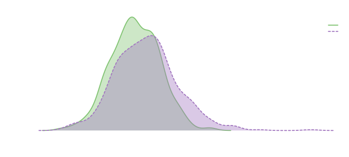
# enter a matrix-like or list object as y to show
# the density distributions of multiple variables.
# internally, this stacks the columns/entries,
# and treats variable names as by.
splot(cbind(x, y), data)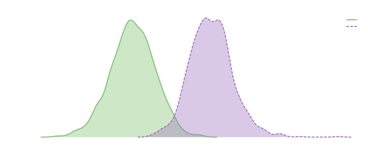
Line and bar plots
# if y is categorical, entering it with no x will show a bar plot by default.
# you can add color based on the mean value or modal level of another variable.
splot(group, data, colorby = x)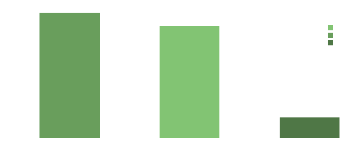
# when x is categorical, the mean of y is shown at each level,
# with error bars showing standard error by default
splot(y ~ group, data)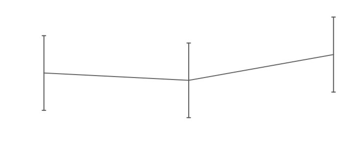
# lines are the default, but any line plot can also be represented with bars
splot(y ~ group, data, type = "bar")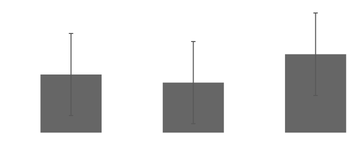
# for bar and line plots, levels of x can be renamed and sorted.
# the levels argument accepts a list of variable names.
# each entry in the levels list can be a vector containing the order or
# level names, or a list with a vector each for names and the order.
splot(y ~ group, data, levels = list(
group = list(c("one", "two", "three"), c(2, 3, 1))
))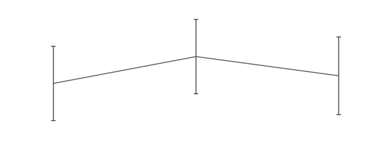
# multiple y variable can also be displayed with lines or bars.
# the mv.scale argument centers and scales (z-scores) each variable when TRUE,
# or just centers them when FALSE or a character.
splot(cbind(x, y) ~ bet1, data, mv.scale = "center")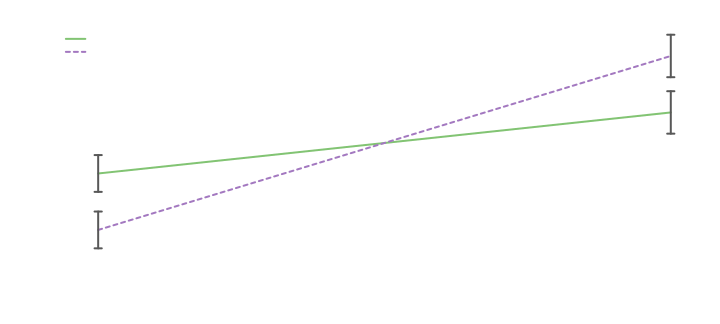
# multiple y variables can also be moved to the x axis, in which case x is moved to by
splot(cbind(x, y) ~ bet1, data, mv.as.x = TRUE)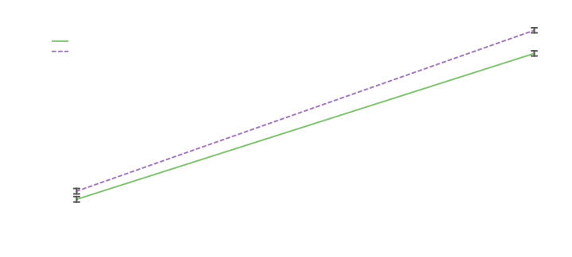
# when by has many levels, you can color lines by another variable
splot(y ~ by * id, data, colorby = y)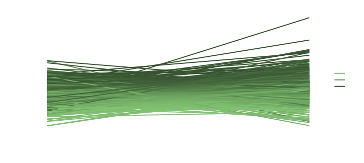
# you can also group colors and add randomized shades with
# shuffle = TRUE or method = 'related'.
# additional arguments in a colorby list are passed to splot.color (see ?splot.color)
splot(y ~ by * id, data, colorby = list(bet1, method = "related"))
Scatter plots
# any bar or line plot can also be represented as a scatter plot.
# this shows the actual data, rather than error bars.
splot(cbind(x, y) ~ bet1, data, type = "scatter")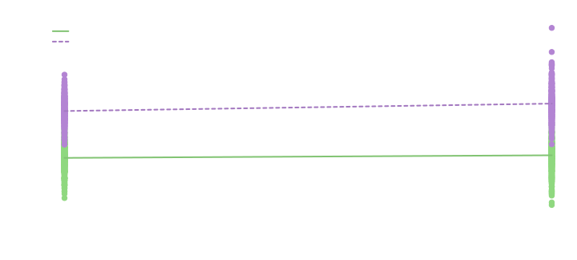
# You can also plot categorical variables in the y position
splot(group ~ y, data)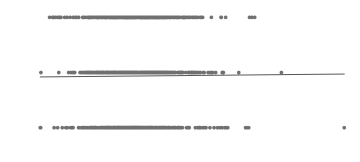
# if y has only two levels, you can display the probability
# of the second class predicted by a logistic regression
splot(by ~ y, data, lines = "probability")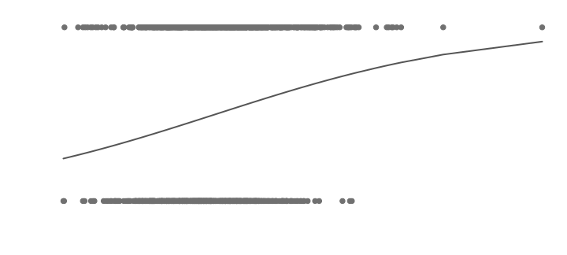
# when y and x are both continuous, a scatter plot is show by default.
# in this which case, you can also color by a continuous variable.
splot(y ~ x, data, colorby = y)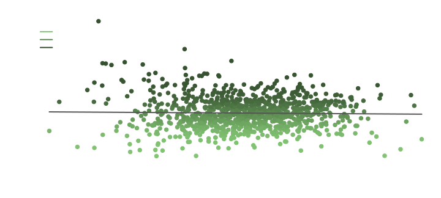
# you can fit different models (loess or spline) to show bendy lines
splot(y ~ x, data, lines = "loess")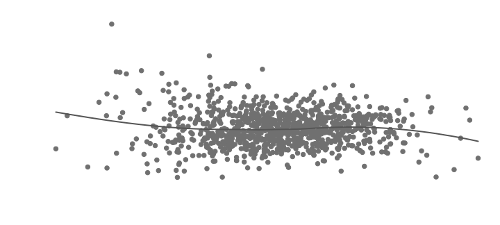
# or adjust the linear model with transformations of x
splot(y ~ x + x^2 + x^3, data)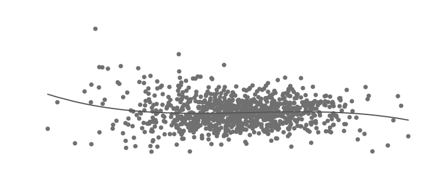
# when splitting variables are included (by and/or between),
# the model is fit to each subset
splot(y ~ x * by * bet1 * bet2 + x^2 + x^3, data)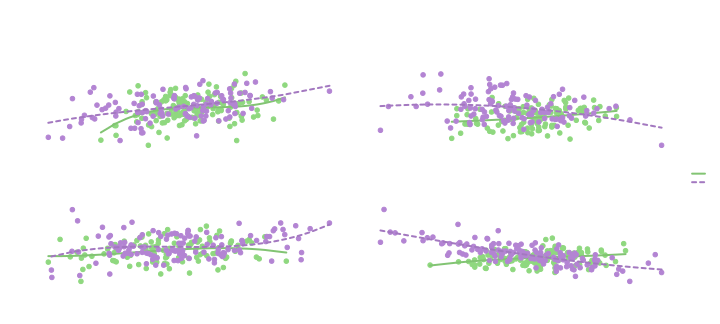
Brought to you by the Language Use and Social Interaction lab at Texas Tech University